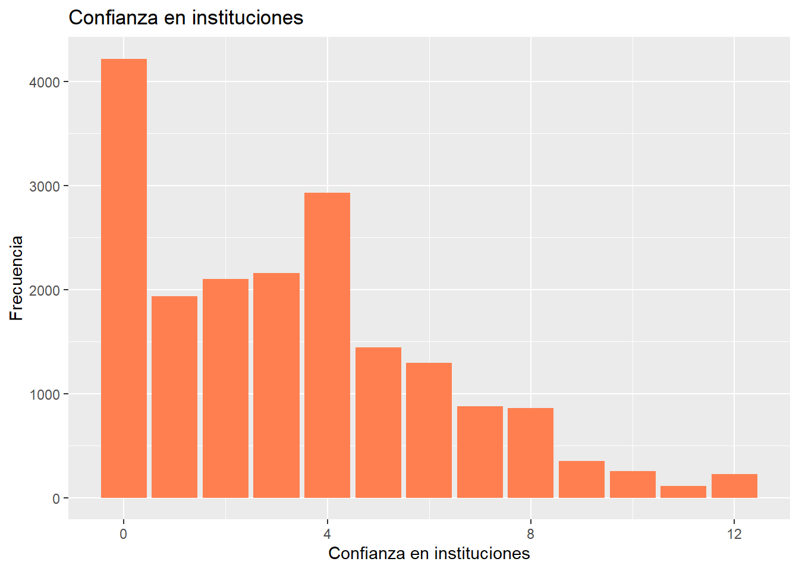
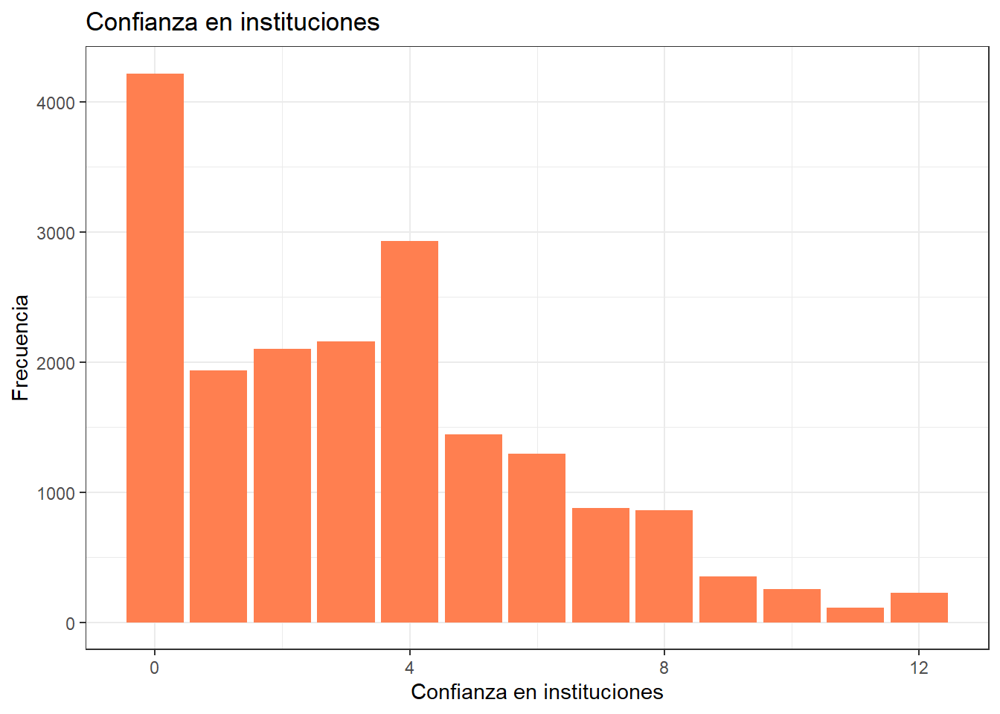
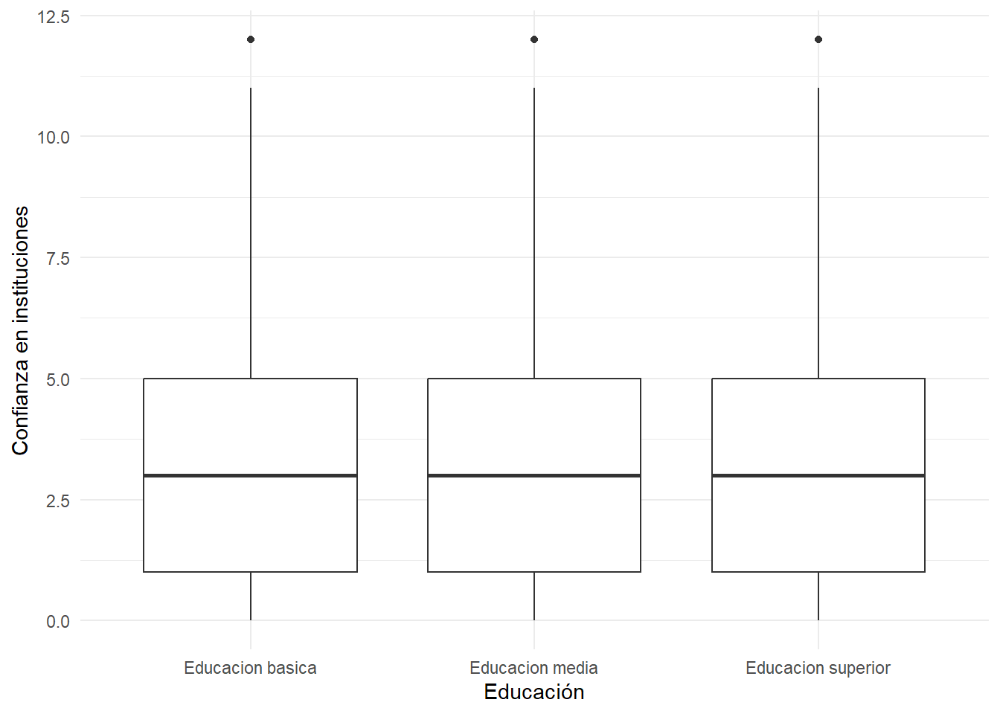
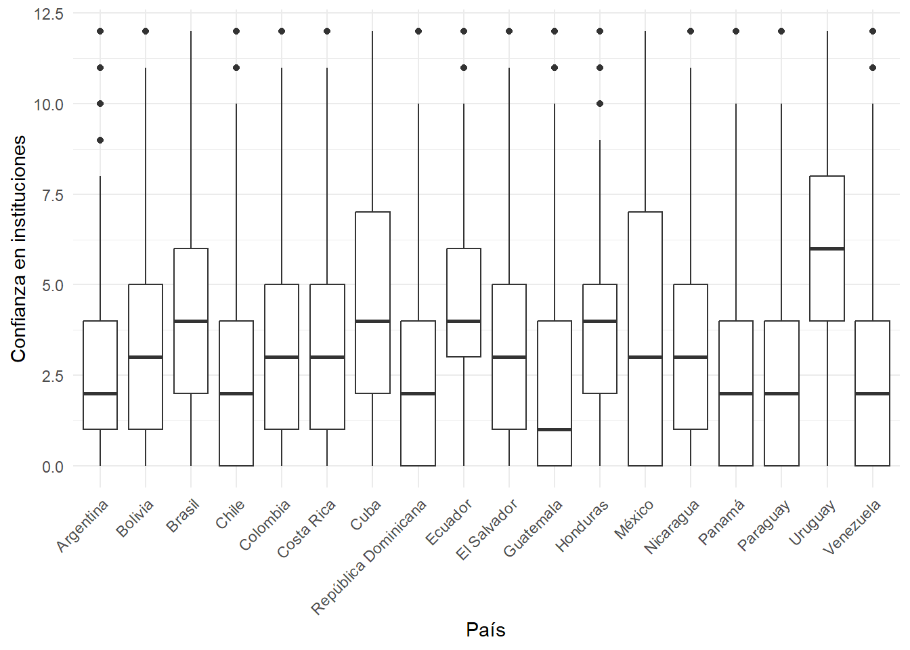

Esta práctica asume como base el desarrollo de la Práctica anterior, a la cual se hará referencia permanente.
En la Práctica anterior se desarrolló un código de preparación de datos que generó una base de datos procesada para el análisis. En esta Práctica comenzamos con el segundo momento de procesamiento de datos, que es el análisis propiamente tal. El análisis se divide en descripción de variables y contraste de hipótesis. En esta práctica nos enfocaremos en la primera fase, que llega hasta el punto 3 del código de análisis:
Al igual que el Código de Preparación, el Código de Análisis posee una estructura definida. En este caso son 4 partes, donde las primeras son similares al código de preparación:
Identificación y descripción general: Título, autor(es), fecha, información breve sobre el contenido del documento
Librerías principales (de R) a utilizar en el análisis
Datos (que provienen de los preparados en la fase anterior)
Descripción de variables
Tabla general de variables para la sección metodológica del reporte
Exploración descriptiva de relaciones entre variables
Contraste de hipótesis / inferencia estadística según la técnica que corresponda
Al final de esta práctica la idea es que cada un_ pueda avanzar hasta el punto 3 del Código de Análisis. El punto 4 (contraste de hipótesis) se desarrollará más adelante en este curso con énfasis en la técnica de regresión.
Código de análisis
1. Librerías
Código
pacman::p_load(sjlabelled, dplyr, #Manipulacion de datos stargazer, #Tablas sjmisc, # Tablas summarytools, # Tablas kableExtra, #Tablas sjPlot, #Tablas y gráficos corrplot, # Correlaciones sessioninfo, # Información de la sesión de trabajo ggplot2) # Para la mayoría de los gráficos
2. Cargar base de datos
Vamos a cargar la base de datos latinobarometro_proc.Rdata, que generamos durante la práctica anterior. Se puede llamar desde el directorio en que se guardó anteriormente dando la ruta completa:
Código
load("ruta-hacia-carpeta-local/latinobarometro_proc.RData") #Cargar base de datos
O también para esta práctica la podemos llamar directamente desde nuestro sitio web:
Código
load(url("https://github.com/Kevin-carrasco/R-data-analisis/raw/main/files/data/latinobarometro_total.RData")) #Cargar base de datos
Exploración inicial general de la base de datos
Código
names(proc_data) # Muestra los nombres de las variables de la base de datos
Los resultados referidos a descripción de variables se presentan en dos momentos del reporte de investigación:
en la sección de metodología, cuando se presentan las variables del estudio en una tabla descriptiva de variables.
en la sección de análisis, que en general comienza con una exploración de asociaciones entre variables, también conocido como análisis descriptivo.
3.1 Tabla descriptiva de variables para sección metodológica
A continuación se presentan dos opciones de generar esta tabla descriptiva de variables con distintas librerías de R.
a. Tabla descriptiva con stargazerstargazer
La función stargazer (de la librería del mismo nombre) permitirá mostrar los principales estadísticos descriptivos univariados de las variables: medidas de tendencia central (media), de dispersión (desviación estándar) y posición (mínimo, máximo, percentiles).
Código
stargazer(proc_data,type ="text")
=================================
Statistic N Mean St. Dev. Min Max
=================================
Algunas observaciones sobre esta tabla:
La opción type="text" permite que podamos ver los resultados directamente en la consola, de manera bastante rudimentaria. Con otras opciones que veremos más adelante se puede estilizar para su publicación.
Una distinción relevante a considerar cuando se describen variables es si estas son categóricas o continuas. La definición de si una variables es tratada como categórica o continua es algo que hace el/la autor/a del reporte, sin embargo hay variables nominales como sexo que claramente corresponden a categóricas, y por lo tanto no corresponde hacer un promedio entre ambas. Sin embargo, como esta variable está codificada 0 (hombre) y 1 (mujer), en este caso lo que indica el valor de la columna promedio (Mean=0.537) es la proporción de mujeres vs hombres. En otras palabras, hay un 54% de mujeres y 46% de hombres en la muestra.
b. Tablas descriptivas con descr, librería sjmiscsjmisc::descr
En este caso utilizamos la forma librería::función (sjmisc::descr), ya que la función descr también existe en otras librerías y así nos aseguramos que la función utilizada es de esa librería específica.
Seleccionamos algunas columnas específicas con información más relevante con la opción show. Además, agregamos la función kable para obtener una tabla que luego sea fácilmente publicable en distintos formatos (a profundizar en ejercicios posteriores):
c. Tabla descriptiva con summarytools::dfSummarysummarytools::dfSummary
Esta tercera opción nos ofrece una tabla aún más detallada, con gráficos para cada variable, las frecuencias para cada valor, y las etiquetas de las variables, por lo que es muy recomendable.
Es muy ancha para visualizar bien en la consola de R, pero en su versión más definitiva de publicación se verá así:
Código
view(dfSummary(proc_data, headings=FALSE))
No
Variable
Label
Stats / Values
Freqs (% of Valid)
Graph
Valid
Missing
1
conf_gob [numeric]
Confianza: Gobierno
Mean (sd) : 1 (1)
min ≤ med ≤ max:
0 ≤ 1 ≤ 3
IQR (CV) : 2 (1)
0
:
8138
(
41.2%
)
1
:
6228
(
31.5%
)
2
:
3281
(
16.6%
)
3
:
2101
(
10.6%
)
19748 (97.7%)
456 (2.3%)
2
conf_cong [numeric]
Confianza: Congreso
Mean (sd) : 0.8 (0.9)
min ≤ med ≤ max:
0 ≤ 1 ≤ 3
IQR (CV) : 1 (1.1)
0
:
8495
(
43.8%
)
1
:
6905
(
35.6%
)
2
:
2971
(
15.3%
)
3
:
1011
(
5.2%
)
19382 (95.9%)
822 (4.1%)
3
conf_jud [numeric]
Confianza: Poder judicial
Mean (sd) : 0.9 (0.9)
min ≤ med ≤ max:
0 ≤ 1 ≤ 3
IQR (CV) : 2 (1)
0
:
7550
(
38.8%
)
1
:
6886
(
35.4%
)
2
:
3671
(
18.9%
)
3
:
1360
(
7.0%
)
19467 (96.4%)
737 (3.6%)
4
conf_partpol [numeric]
Confianza: Partidos politicos
Mean (sd) : 0.6 (0.8)
min ≤ med ≤ max:
0 ≤ 0 ≤ 3
IQR (CV) : 1 (1.3)
0
:
11097
(
56.5%
)
1
:
5857
(
29.8%
)
2
:
2099
(
10.7%
)
3
:
600
(
3.1%
)
19653 (97.3%)
551 (2.7%)
5
educacion [factor]
Educación
1. Educacion basica
2. Educacion media
3. Educacion superior
7141
(
35.3%
)
8290
(
41.0%
)
4770
(
23.6%
)
20201 (100.0%)
3 (0.0%)
6
sexo [factor]
Sexo
1. Hombre
2. Mujer
9667
(
47.8%
)
10537
(
52.2%
)
20204 (100.0%)
0 (0.0%)
7
edad [numeric]
Edad
Mean (sd) : 41 (16.5)
min ≤ med ≤ max:
16 ≤ 39 ≤ 100
IQR (CV) : 28 (0.4)
81 distinct values
20204 (100.0%)
0 (0.0%)
8
idenpa [numeric]
Mean (sd) : 365.4 (260.5)
min ≤ med ≤ max:
32 ≤ 222 ≤ 862
IQR (CV) : 421 (0.7)
18 distinct values
20204 (100.0%)
0 (0.0%)
9
conf_inst [numeric]
Confianza en instituciones
Mean (sd) : 3.3 (2.9)
min ≤ med ≤ max:
0 ≤ 3 ≤ 12
IQR (CV) : 4 (0.9)
13 distinct values
18768 (92.9%)
1436 (7.1%)
Generated by summarytools 1.0.1 (R version 4.3.2) 2024-04-02
Nota sobre casos perdidos (NAs) na.omit(data)
Hasta ahora hemos mantenido los casos perdidos en la base de datos, ya que son importantes de reportar en la tabla general de variables. Sin embargo, de aquí en adelante se recomienda trabajar solo con casos completos, es decir, sacar los casos perdidos. El quitar los casos perdidos de una base de datos es muy simple con la función na.omit, pero para tomar precauciones y asegurarse que funciona se recomienda el siguiente procedimiento:
respaldar la base de datos original en el espacio de trabajo (por si queremos en adelante realizar algún análisis referido a casos perdidos), la dejaremos con el nombre proc_data_original.
contamos el número de casos con el comando dim
contamos el número de casos perdidos con sum(is.na(proc_data))
borramos los casos perdidos con proc_data <-na.omit(proc_data)
contamos nuevamente con dim para asegurarnos que se borraron
y por temas de funcionamiento de R, al realizar la operación de sacar casos perdidos, se borra toda la información de las etiquetas (labels), así que las recuperamos de la base original con el comando copy_labels, de la librería sjlabelled.
Para visualizar variables mediante gráficos, en R el paquete más comúnmente usado es ggplot2. La lógica detrás de este paquete es que funciona por capas.
proc_data %>%ggplot(aes(x = conf_inst)) +geom_bar(fill ="coral")+labs(title ="Confianza en instituciones",x ="Confianza en instituciones",y ="Frecuencia")

Código
# Crear el gráfico usando ggplot2graph1 <- proc_data %>%ggplot(aes(x = conf_inst)) +geom_bar(fill ="coral")+labs(title ="Confianza en instituciones",x ="Confianza en instituciones",y ="Frecuencia") +theme_bw()graph1

Código
# y lo podemos guardar:ggsave(graph1, file="files/img/graph1.png")
Saving 7 x 5 in image
3.3 Exploración de asociación entre variables
Dado que las hipótesis de investigación corresponden a asociación entre variables, antes de realizar el contraste de hipótesis se suele presentar un análisis descriptivo que explora las asociaciones entre variables.
La forma de explorar las asociaciones entre variables dependen de la naturaleza de las variables que se asocian:
Variables categóricas: tabla de contingencia
Variable categórica y continua: tabla de promedios por cada categoría
En esta sección también es muy relevante la visualización de datos mediante gráficos, por lo que incluiremos algunos.
El uso tanto de tablas como de gráficos en el reporte queda a discreción del/a autor/a. La pregunta que orienta esta decisión es: ¿Me permite enriquecer la discusión de los resultados en relación a las hipótesis planteadas?
Tablas de contingencia para variables categóricas
Para tablas de contingencia categóricas utilizaremos la función sjt.xtab, de la librería sjPlot. Veamos primero una especificación simple: sjPlot::sjt.xtab
Código
sjt.xtab(proc_data$educacion, proc_data$sexo)
Educación
Sexo
Total
Hombre
Mujer
Educacion basica
3027
3216
6243
Educacion media
3845
4041
7886
Educacion superior
2252
2384
4636
Total
9124
9641
18765
χ2=0.108 · df=2 · Cramer's V=0.002 · p=0.948
Al ejecutar el comando, el resultado aparece automáticamente en el visor de RStudio. A esta tabla podemos también agregar porcentajes de filas y/o columnas, según sea lo más relevante analizar. En general se recomienda agregar solo un porcentaje, de otra manera la tabla se satura de información. Además, vamos a quitar el pie de la tabla (conviene dejarlo solo si hay hipótesis asociadas al cruce simple entre las dos variables).
Educacion basica Educacion media Educacion superior
3.396604 3.229647 3.303063
Aquí vemos en promedio de conf_inst para cada uno de los 3 niveles de la variable educación educacion. Si se estima conveniente este tipo de cruces se puede representar también en una tabla con más opciones de información y también de publicación. Para esto utilizaremos una función algo más compleja de la librería dplyr.dplyr Esta librería permite aplicar una serie de funciones concatenadas y enlazadas mediante el operador %>%. El sentido de cada función aparece comentado abajo:
Código
proc_data %>%# se especifica la base de datosselect(conf_inst,educacion) %>%# se seleccionan las variables dplyr::group_by(Educación=sjlabelled::as_label(educacion)) %>%# se agrupan por la variable categórica y se usan sus etiquetas con as_label dplyr::summarise(Obs.=n(),Promedio=mean(conf_inst),SD=sd(conf_inst)) %>%# se agregan las operaciones a presentar en la tablakable(, format ="markdown") # se genera la tabla
Educación
Obs.
Promedio
SD
Educacion basica
6243
3.396604
3.038681
Educacion media
7886
3.229648
2.751494
Educacion superior
4636
3.303063
2.749961
Esta asociación también se puede representar de manera más simple con un gráfico, en este caso de cajas o boxplot mediante la función geom_boxplot de gplot2:sjPlot::plot_grpfrq
Código
graph <-ggplot(proc_data, aes(x =educacion, y = conf_inst)) +geom_boxplot() +labs(x ="Educación", y ="Confianza en instituciones") +theme_minimal()graph

Código
# y lo podemos guardar:ggsave(graph, file="files/img/graph.png")
Saving 7 x 5 in image
Sin embargo, al ser los promedios similares no permite ver demasiadas diferencias… Probemos otro
Código
ggplot(proc_data, aes(x =educacion, y = conf_inst)) +geom_point() +labs(x ="Educación", y ="Confianza en instituciones") +theme_minimal()
En este gráfico cada punto representa una observación para cada categoría. Por lo tanto, al existir tantos valores difernetes en cada categoría, el gráfico tampoco nos presenta información sustantiva ¿Qué necesitamos hacer? Necesitamos obtener exactamente los datos que queremos graficar, esto es, el promedio por cada categoría. Volvamos a group_by
Código
datos <- proc_data %>%group_by(educacion) %>%summarise(promedio =mean(conf_inst))ggplot(datos, aes(x =educacion, y = promedio)) +geom_point() +labs(x ="Educación", y ="Confianza en instituciones") +theme_minimal()+ylim(0, 12)
Este gráfico entrega un poco más de información, pero al ver pocas diferencias en el promedio de cada categoría no se logran evidenciar
Código
proc_data$idenpa <-factor(proc_data$idenpa,labels=c("Argentina","Bolivia","Brasil","Chile","Colombia","Costa Rica","Cuba","República Dominicana","Ecuador","El Salvador","Guatemala","Honduras","México","Nicaragua","Panamá","Paraguay","Uruguay","Venezuela"),levels=c("32","68","76","152","170","188","214","218","222","320","340","484","558","591","600","604","858","862"))graph_box <-ggplot(proc_data, aes(x = idenpa, y = conf_inst)) +geom_boxplot() +labs(x ="País", y ="Confianza en instituciones") +theme_minimal()+theme(axis.text.x =element_text(angle =45, hjust =1)) # Rotar las etiquetas del eje xgraph_box

Código
# y lo podemos guardar:ggsave(graph_box, file="files/img/graph.png")
Saving 7 x 5 in image
De manera alternativa, podemos seguir explorando nuestros datos con otros gráficos
Para varias variables univariadas, tipo escala likert, una buena alternativa es el paquete sjPlot, en este caso la función plot_stackfrq:
---title: "Práctico 4. Visualización de variables"subtitle: "R data analisis"linktitle: "Práctico 4: Visualización"date: "2024-03-26"lang: es---# Presentación# Objetivo de la prácticaEsta práctica asume como base el desarrollo de la [Práctica anterior](https://metod1-mcs.netlify.app/resource/02-resource.html), a la cual se hará referencia permanente.En la [Práctica anterior](https://metod1-mcs.netlify.app/resource/02-resource.html) se desarrolló un código de preparación de datos que generó una base de datos procesada para el análisis. En esta **Práctica** comenzamos con el segundo momento de procesamiento de datos, que es el análisis propiamente tal. El análisis se divide en descripción de variables y contraste de hipótesis. En esta práctica nos enfocaremos en la primera fase, que llega hasta el punto 3 del código de análisis:Al igual que el Código de Preparación, el Código de Análisis posee una estructura definida. En este caso son 4 partes, donde las primeras son similares al código de preparación:0. Identificación y descripción general: Título, autor(es), fecha, información breve sobre el contenido del documento1. **Librerías** principales (de R) a utilizar en el análisis2. **Datos** (que provienen de los preparados en la fase anterior)3. **Descripción de variables** - Tabla general de variables para la sección metodológica del reporte - Exploración descriptiva de relaciones entre variables4. **Contraste de hipótesis** / inferencia estadística según la técnica que correspondaAl final de esta práctica la idea es que cada un\_ pueda avanzar hasta el **punto 3** del Código de Análisis. El punto 4 (contraste de hipótesis) se desarrollará más adelante en este curso con énfasis en la técnica de regresión.# Código de análisis## 1. Librerías```{r,message=FALSE,warning=FALSE}pacman::p_load(sjlabelled, dplyr, #Manipulacion de datos stargazer, #Tablas sjmisc, # Tablas summarytools, # Tablas kableExtra, #Tablas sjPlot, #Tablas y gráficos corrplot, # Correlaciones sessioninfo, # Información de la sesión de trabajo ggplot2) # Para la mayoría de los gráficos```## 2. Cargar base de datosVamos a cargar la base de datos **latinobarometro_proc.Rdata**, que generamos durante la práctica anterior. Se puede llamar desde el directorio en que se guardó anteriormente dando la ruta completa:```{r eval=FALSE, message=FALSE, warning=FALSE}load("ruta-hacia-carpeta-local/latinobarometro_proc.RData") #Cargar base de datos```O también para esta práctica la podemos llamar directamente desde nuestro sitio web:```{r }load(url("https://github.com/Kevin-carrasco/R-data-analisis/raw/main/files/data/latinobarometro_total.RData")) #Cargar base de datos```- Exploración inicial general de la base de datos```{r}names(proc_data) # Muestra los nombres de las variables de la base de datosdim(proc_data) # Dimensiones```En el caso de esta base, `r dim(proc_data)[1]` casos y `r dim(proc_data)[2]` variablesRecordando el contenido de cada variable preparada en la práctica anterior:- [`conf_gob`] = Confianza en el gobierno.- [`conf_cong`] = Confianza en el congreso.- [`conf_jud`] = Confianza en el poder judicial.- [`conf_partpol`] = Confianza en los partidos políticos.- [`conf_inst`] = Indice sumativo de confianza en instituciones políticas.- [`educacion`] = Nivel educacional(1 = Educacion básica, 2 = Educacion media, 3 = superior)- [`sexo`] = Sexo (O = Hombre; 1 = Mujer)- [`edad`] = ¿Cuáles su edad? ## 3. Descripción de variablesLos resultados referidos a descripción de variables se presentan en dos momentos del reporte de investigación:- en la sección de *metodología*, cuando se presentan las variables del estudio en una **tabla descriptiva** de variables.- en la sección de *análisis*, que en general comienza con una exploración de **asociaciones entre variables**, también conocido como análisis descriptivo.### 3.1 Tabla descriptiva de variables para sección metodológicaA continuación se presentan dos opciones de generar esta tabla descriptiva de variables con distintas librerías de R.**a. Tabla descriptiva con `stargazer`**[stargazer]{.sidenote}La función `stargazer` (de la librería del mismo nombre) permitirá mostrar los principales estadísticos descriptivos univariados de las variables: medidas de tendencia central (media), de dispersión (desviación estándar) y posición (mínimo, máximo, percentiles).```{r}stargazer(proc_data,type ="text")```Algunas observaciones sobre esta tabla:- La opción `type="text"` permite que podamos ver los resultados directamente en la consola, de manera bastante rudimentaria. Con otras opciones que veremos más adelante se puede estilizar para su publicación.- Una distinción relevante a considerar cuando se describen variables es si estas son **categóricas** o **continuas**. La definición de si una variables es tratada como categórica o continua es algo que hace el/la autor/a del reporte, sin embargo hay variables nominales como sexo que claramente corresponden a categóricas, y por lo tanto no corresponde hacer un promedio entre ambas. Sin embargo, como esta variable está codificada 0 (hombre) y 1 (mujer), en este caso lo que indica el valor de la columna promedio (Mean=0.537) es la proporción de mujeres vs hombres. En otras palabras, hay un 54% de mujeres y 46% de hombres en la muestra.**b. Tablas descriptivas con `descr`, librería sjmisc**[sjmisc::descr]{.sidenote}La opción básica de `descr` es la siguiente:```{r}sjmisc::descr(proc_data)```En este caso utilizamos la forma `librería::función` (`sjmisc::descr`), ya que la función `descr` también existe en otras librerías y así nos aseguramos que la función utilizada es de esa librería específica.Seleccionamos algunas columnas específicas con información más relevante con la opción `show`. Además, agregamos la función `kable` para obtener una tabla que luego sea fácilmente publicable en distintos formatos (a profundizar en ejercicios posteriores):```{r}sjmisc::descr(proc_data,show =c("label","range", "mean", "sd", "NA.prc", "n"))%>%kable(.,"markdown")```**c. Tabla descriptiva con `summarytools::dfSummary`**[summarytools::dfSummary]{.sidenote}Esta tercera opción nos ofrece una tabla aún más detallada, con gráficos para cada variable, las frecuencias para cada valor, y las etiquetas de las variables, por lo que es muy recomendable.Se específica de la siguiente manera:```{r}summarytools::dfSummary(proc_data, plain.ascii =FALSE)```Es muy ancha para visualizar bien en la consola de R, pero en su versión más definitiva de publicación se verá así:```{r eval=FALSE }view(dfSummary(proc_data, headings=FALSE))``````{r echo=FALSE}print(dfSummary(proc_data, headings =FALSE), method ="render")```#### Nota sobre casos perdidos (NAs) [na.omit(data)]{.sidenote}Hasta ahora hemos mantenido los casos perdidos en la base de datos, ya que son importantes de reportar en la tabla general de variables. Sin embargo, de aquí en adelante se recomienda trabajar solo con casos completos, es decir, **sacar los casos perdidos**. El quitar los casos perdidos de una base de datos es muy simple con la función `na.omit`, pero para tomar precauciones y asegurarse que funciona se recomienda el siguiente procedimiento:- respaldar la base de datos original en el espacio de trabajo (por si queremos en adelante realizar algún análisis referido a casos perdidos), la dejaremos con el nombre proc_data_original.- contamos el número de casos con el comando `dim`- contamos el número de casos perdidos con `sum(is.na(proc_data))`- borramos los casos perdidos con `proc_data <-na.omit(proc_data)`- contamos nuevamente con `dim` para asegurarnos que se borraron- y por temas de funcionamiento de R, al realizar la operación de sacar casos perdidos, se borra toda la información de las etiquetas (labels), así que las recuperamos de la base original con el comando `copy_labels`, de la librería `sjlabelled`.```{r}proc_data_original <-proc_datadim(proc_data)sum(is.na(proc_data))proc_data <-na.omit(proc_data)dim(proc_data)proc_data <-sjlabelled::copy_labels(proc_data,proc_data_original)```### 3.2 Visualización de variablesPara visualizar variables mediante gráficos, en R el paquete más comúnmente usado es ggplot2. La lógica detrás de este paquete es que funciona por capas. ```{r}ggplot()``````{r}ggplot(proc_data, aes(x = conf_inst))``````{r}proc_data %>%ggplot(aes(x = conf_inst)) +geom_bar()``````{r}proc_data %>%ggplot(aes(x = conf_inst)) +geom_bar(fill ="coral")``````{r}proc_data %>%ggplot(aes(x = conf_inst)) +geom_bar(fill ="coral")+labs(title ="Confianza en instituciones",x ="Confianza en instituciones",y ="Frecuencia")``````{r}# Crear el gráfico usando ggplot2graph1 <- proc_data %>%ggplot(aes(x = conf_inst)) +geom_bar(fill ="coral")+labs(title ="Confianza en instituciones",x ="Confianza en instituciones",y ="Frecuencia") +theme_bw()graph1# y lo podemos guardar:ggsave(graph1, file="files/img/graph1.png")```### 3.3 Exploración de asociación entre variablesDado que las hipótesis de investigación corresponden a asociación entre variables, antes de realizar el contraste de hipótesis se suele presentar un análisis descriptivo que explora las asociaciones entre variables.La forma de explorar las asociaciones entre variables dependen de la naturaleza de las variables que se asocian:- Variables categóricas: tabla de contingencia- Variable categórica y continua: tabla de promedios por cada categoríaEn esta sección también es muy relevante la visualización de datos mediante gráficos, por lo que incluiremos algunos.El uso tanto de tablas como de gráficos en el reporte queda a discreción del/a autor/a. La pregunta que orienta esta decisión es: *¿Me permite enriquecer la discusión de los resultados en relación a las hipótesis planteadas?*#### Tablas de contingencia para variables categóricasPara tablas de contingencia categóricas utilizaremos la función sjt.xtab, de la librería `sjPlot`. Veamos primero una especificación simple: [sjPlot::sjt.xtab]{.sidenote}```{r}sjt.xtab(proc_data$educacion, proc_data$sexo)```Al ejecutar el comando, el resultado aparece automáticamente en el visor de RStudio. A esta tabla podemos también agregar porcentajes de filas y/o columnas, según sea lo más relevante analizar. En general se recomienda agregar solo un porcentaje, de otra manera la tabla se satura de información. Además, vamos a quitar el pie de la tabla (conviene dejarlo solo si hay hipótesis asociadas al cruce simple entre las dos variables).```{r}sjt.xtab(proc_data$educacion, proc_data$sexo,show.col.prc=TRUE,show.summary=FALSE,encoding ="UTF-8")```#### Tablas de promedio de variable continua por una categóricasEn ejemplo vamos a explorar datos de nuestra variable de confianza en instituciones *conf_inst* por los niveles educacionales *educacion*.Una forma rápida de explorar esto es mediante la función `tapply`, que nos entrega de manera simple el promedio de una variable por otra:```{r}tapply(proc_data$conf_inst, proc_data$educacion, mean)```Aquí vemos en promedio de *conf_inst* para cada uno de los 3 niveles de la variable educación *educacion*. Si se estima conveniente este tipo de cruces se puede representar también en una tabla con más opciones de información y también de publicación. Para esto utilizaremos una función algo más compleja de la librería `dplyr`.[dplyr]{.sidenote} Esta librería permite aplicar una serie de funciones concatenadas y enlazadas mediante el operador `%>%`. El sentido de cada función aparece comentado abajo:```{r}proc_data %>%# se especifica la base de datosselect(conf_inst,educacion) %>%# se seleccionan las variables dplyr::group_by(Educación=sjlabelled::as_label(educacion)) %>%# se agrupan por la variable categórica y se usan sus etiquetas con as_label dplyr::summarise(Obs.=n(),Promedio=mean(conf_inst),SD=sd(conf_inst)) %>%# se agregan las operaciones a presentar en la tablakable(, format ="markdown") # se genera la tabla```Esta asociación también se puede representar de manera más simple con un gráfico, en este caso de cajas o boxplot mediante la función `geom_boxplot` de `gplot2`:[sjPlot::plot_grpfrq]{.sidenote}```{r}graph <-ggplot(proc_data, aes(x =educacion, y = conf_inst)) +geom_boxplot() +labs(x ="Educación", y ="Confianza en instituciones") +theme_minimal()graph# y lo podemos guardar:ggsave(graph, file="files/img/graph.png")```Sin embargo, al ser los promedios similares no permite ver demasiadas diferencias... Probemos otro```{r}ggplot(proc_data, aes(x =educacion, y = conf_inst)) +geom_point() +labs(x ="Educación", y ="Confianza en instituciones") +theme_minimal()```En este gráfico cada punto representa una observación para cada categoría. Por lo tanto, al existir tantos valores difernetes en cada categoría, el gráfico tampoco nos presenta información sustantiva ¿Qué necesitamos hacer? Necesitamos obtener exactamente los datos que queremos graficar, esto es, el promedio por cada categoría. Volvamos a `group_by````{r}datos <- proc_data %>%group_by(educacion) %>%summarise(promedio =mean(conf_inst))ggplot(datos, aes(x =educacion, y = promedio)) +geom_point() +labs(x ="Educación", y ="Confianza en instituciones") +theme_minimal()+ylim(0, 12)```Este gráfico entrega un poco más de información, pero al ver pocas diferencias en el promedio de cada categoría no se logran evidenciar```{r warning=FALSE}proc_data$idenpa <-factor(proc_data$idenpa,labels=c("Argentina","Bolivia","Brasil","Chile","Colombia","Costa Rica","Cuba","República Dominicana","Ecuador","El Salvador","Guatemala","Honduras","México","Nicaragua","Panamá","Paraguay","Uruguay","Venezuela"),levels=c("32","68","76","152","170","188","214","218","222","320","340","484","558","591","600","604","858","862"))graph_box <-ggplot(proc_data, aes(x = idenpa, y = conf_inst)) +geom_boxplot() +labs(x ="País", y ="Confianza en instituciones") +theme_minimal()+theme(axis.text.x =element_text(angle =45, hjust =1)) # Rotar las etiquetas del eje xgraph_box# y lo podemos guardar:ggsave(graph_box, file="files/img/graph.png")```De manera alternativa, podemos seguir explorando nuestros datos con otros gráficosPara varias variables univariadas, tipo escala likert, una buena alternativa es el paquete sjPlot, en este caso la función plot_stackfrq:```{r}graph2 <- sjPlot::plot_stackfrq(dplyr::select(proc_data, conf_gob, conf_cong, conf_jud, conf_partpol),title ="Confianza en instituciones políticas") +theme(legend.position="bottom")graph2# Guardamosggsave(graph2, file="files/img/graph2.png")```Para asociación de dos variables, retomemos el primer gráfico:```{r}graph3 <- proc_data %>%ggplot(aes(x = conf_inst, fill = sexo)) +geom_bar() +xlab("Confianza en instituciones") +ylab("Cantidad") +labs(fill="Sexo")+scale_fill_discrete(labels =c('Hombre','Mujer'))graph3# Guardamosggsave(graph3, file="files/img/graph3.png")```una forma alternativa:```{r}proc_data %>%ggplot(aes(x = conf_inst)) +geom_bar() +xlab("Confianza en instituciones") +ylab("Cantidad")+facet_wrap(~sexo)```Para variables continuas```{r}graph4 <-ggplot(proc_data, aes(x =as.numeric(edad))) +geom_histogram(binwidth=0.6, colour="black", fill="yellow") +theme_bw() +xlab("Edad") +ylab("Cantidad")graph4 # Guardamosggsave(graph4, file="files/img/graph4.png")```